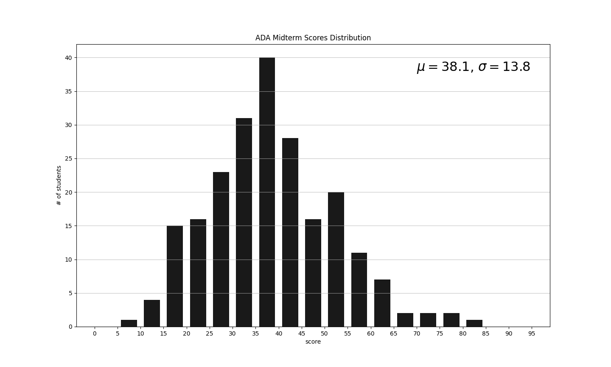

修課心得
Ctrl-F 可以快速的找到課程名稱。如果有你認為寫的不對的內容，或者想問我更詳細的經驗或考古題之類的資源，可以用首頁的聯絡資訊寄信給我。
目前還在逐漸補完中——最後更新日期：2023-12-29
必修
線性代數
- 修課學期：大二上
- 授課教師：陳文進
- 成績等第：A+
課程內容
課程網站。資工系必修的線性代數，用的課本是 Theodore Shifrin, and Malcolm Adams: Linear Algebra: A Geometric Approach, 2nd Ed.，大致講了這本書的前六章。
上課是用老師手寫的筆記，筆記寫的有點簡略，但是配合老師上課的講解看懂後複習時很方便。老師會證明大部分的定理，就算沒有證明的性質，也會用能看出定理證明過程的例子走一遍。
作業是勾課本習題，有簡單的性質證明題或應用定理的計算題，會少量的出現在期中期末考。期中期末考的題目難度跟題型跟作業差不多，應該作業寫的出來就沒有問題。
感想
講課的速度我覺得對第一次學的人來說可能有點快，不過有疑問的話應該都可以請老師重新說明。
聽說單雙班的老師的風格差很多，單班比較重視證明，雙班是在訓練矩陣計算機，讓我非常慶幸選到這一班。這班 A+ 的比例是 45.71%，應該相當的甜，作業或考試如果算法正確但是答案錯誤只會被扣一到兩分，這門課推薦給不喜歡算矩陣或跟我一樣每次都計算錯誤的資工系大一大二學生。
演算法設計與分析
- 修課學期：大二上
- 授課教師：陳縕儂、蕭旭君
- 成績等第：A+
課程內容
資工系大二必修，又被稱為 ADA（Algorithm Design and Analysis）。介紹常見的幾種演算法設計方法：分而治之、動態規劃、貪婪等等，圖的演算法、均攤分析，還有課程最後（不太嚴謹的）介紹複雜度理論，像是 NP-completeness 還有近似演算法。
課程前後分別由陳縕儂、蕭旭君老師授課，前半都是先介紹那個設計方法的模式，再帶幾個運用該設計方法的例子；後半則是介紹了一些代表性的演算法和複雜度理論的基本精神。
每週都會有小作業，可能是簡單的實作上課教過的演算法，或者手算某些演算法的過程等等，只要上課的內容有聽懂應該就不會太難的問題。
此外還有四次的大作業。ADA 的作業難度可說是惡名昭彰，每次都會有手寫題跟程式題，手寫基本上是上課內容的延伸或應用，但程式題常常會有些意想不到的變化，至少對我來說，能夠自己想出做法的題目是少之又少，建議多跟同學、助教討論。這學期最後一次的作業有利用線性規劃解 clique 問題、寫 connect 4 AI、還滿有趣的。
期中考的難度相當高，題型跟作業有點像，但是寫演算法的題目都要說明複雜度跟正確性，在時間壓力下要想清楚、寫清楚並不容易，成績分佈是這樣：

期末考就變得簡單許多，有很多不用複雜度、正確性證明的題目。
感想
對我來說，這門課修起來滿累的，前半的課程感覺講的例子太多了，有點跟不上，作業又都想不太到要怎麼做，如果不是許多厲害的同學的幫助，絕對不可能拿到 A+。因為作業都寫得很辛苦，看到期中考只拿到剛好及格的分數的時候以為已經結束了，沒想到其實意外的還算不錯。
如果是資工系的同學，恭喜你，你非修這門課不可，建議可以先預習一些這門課的內容，也許——但不保證——會比較容易跟上。如果你跟我一樣不是競賽大佬的話，多找幾個人一起寫作業，多跑地下室、217 去問問題，應該會過的比較開心。
如果你沒有寫過程式或是沒有碰過資料結構、演算法，但是想修這門課，建議你先準備好停修單。
系統程式設計
- 修課學期：大二上
- 授課教師：鄭卜壬
- 成績等第：A+
課程內容
資工系大二必修，俗稱 SP（Systems Programming），這是它的課程網站。這門課介紹類 Unix 系統的各種系統概念，例如 process、檔案、輸入輸出、signal 等等，並且在作業中實作一些利用 system call 的程式，比如伺服器、用 setjmp、longjmp 來模擬 multithreading 等等。
這門課的期中期末考前會發考古題，題型跟 NTU-Exam 版上的差不多，通常是給一個情境然後運用上課提到的知識來預測會發生什麼事情，比如問說一段程式碼會不會發生 race condition 或 deadlock；或者要實作某種功能，比如 double fork。考卷後面會附函式的 prototype，但是不會寫功能，所以還是要稍微記一下。期中滿分 100，期末考的滿分會超過 100 分。
感想
這門課滿有趣的，可以學到很多 Linux 的知識和工具。我覺得老師講話的方式滿有趣的，而且時不時會講到一些他跟以前的學生還有 Google 的小八卦，還有「媽呀！」這樣的口頭禪。上課的知識點有點多，平常上課的時候可能就要多想想：範例的程式碼如果改了一點會發生什麼事。這樣考試的時候比較容易反應過來，而且知道應用方式的話，也比較不容易把知識忘掉。
個人覺得最難的是作業一，不過參考 Beej’s Guide to Network Programming 之後就好寫很多。
稍微抱怨一下這門課的助教有幾次的作業規格寫的不太清楚，這部分可以參考 aoaaceai 的課程評價，還有期中期末考的某些給分我有一些意見，不過後來跟助教討論之後都有要到分數。
不過還是推這門課給認為自己有一定的 C 能力，對 Linux（或各種類 Unix） 系統有興趣，或者想自己寫寫看系統程式的人。
計算機網路
- 修課學期：大二上
- 授課教師：周承復
- 成績等第：A+
課程內容
這門課的課本是 Computer Networking: A Top Down Approach Featuring the Internet, 7th edition, Jim Kurose and Keith Ross，涵蓋從應用層到網路層的部分。老師會用投影片上課。
手寫作業和考試都類似課本習題，例如給定伺服器的 round trip time，在各種 TCP 的設定中，下載所有文件需要多久的時間。給分寬鬆。
作業有分兩個階段，階段一是要寫一個能夠傳送大檔案的伺服器，這個作業跟 SP 的作業很像，其實可以直接改它的程式碼。階段二要做一個可以上傳圖片跟大檔案的聊天室，不過不需要自動更新的功能。本來作業只開放用 C/C++，不過在同學要求下好像開放了 Golang 跟 Java，只是 HTTP 的功能一定要自己寫；我們組就是用 Java 做的。
感想
我覺得有點可惜的是，老師感覺對網路沒有到非常熟悉，有時候感覺只是在唸投影片，而且還會講錯一些部分。但因為投影片的內容比課本少很多，還有老師會洩題，所以我還是會去上課。考試的內容都很簡單，而且給分很寬鬆。最後這門課有 49.45% 的人拿到 A+，應該是相當的甜。
這門課要感謝 aoaaceai 在有計算機安全的 final CTF 之下還把階段二的後端肝出來，讓我只需要把前端的 DOM 等等的東西寫好就好。
我不太推薦這門課，對網路有興趣的可能可以試試看另一班或者自己讀書，但甜度應該是有掛保證的。
自動機與形式語言
- 修課學期：大二上
- 授課教師：林智仁
- 成績等第：A+
課程內容
這門課中會出現常常聽到的 automaton、regular expression、context-free grammars 還有 turing machine、P vs NP 等等主題，這一年的上課內容可以在課程網站上找到。上課的方式就是放老師錄好的影片，老師會在某些地方暫停給一些額外的說明還有問同學有沒有問題。影片的內容跟課本差不多，只是有時候不會把證明寫完，而是操作一個跟證明過程大致相同的例子。如果想知道具體的證明可以看這門課的課本：Michael Sipser, Introduction to the Theory of Computation。
作業是課本習題，助教批改。考試的題型有幾種： - 簡單的證明，或者判斷某個敘述是否正確並給出證明或反例 - 構造出符合某個條件的自動機、圖靈機、regex…… 考試的題目跟解答也都有在網頁上，所以可以自己看看。
感想
這門課不太需要什麼基礎，頂多需要知道什麼是 DFS、BFS，不過需要的知識跟符號都會在第一堂課講清楚，所以說不定大一就可以修了。我有點不習慣老師講的英文，而且課本寫得很清楚，所以我從第一次期中考以後都是自己讀課本。有點可惜的是，這學期的進度有點慢，剛講到 NP-compleness 就結束了。另外在意 GPA 的同學可能要注意這門課有先決定好各個等第的人數，按照排名來換算等第，考試又不太難，如果一不小心可能就沒有 A+ 了（今年 A+ 是 7/71）。
有些人可能會好奇這門課對於沒有要做比較理論方面的計算機科學的人有什麼用。我覺得像是 context-free grammar 跟 regex，還有狀態機這些概念都會在計結、計網，還有看各種文件的時候出現，有先在這門課看過的話，可能會比較容易進入狀況吧？
總結來說，這門課推薦給相信自己的細心程度（，或者不在意 GPA），又想大致瞭解那些酷酷的專有名詞是什麼的同學。
計算機結構
- 修課學期：大二上
- 授課教師：楊佳玲
- 成績等第：A
課程內容
這門課的內容有些學校好像是叫做計算機組織。用的課本是 Computer Organization & Design. The Hardware/Software Interface. RISC-5 Edition, David A. Patterson and John L. Hennessy。會介紹什麼是指令集、組合語言、簡單的 CPU、快取、記憶體的構造、多處理器的結構等第。還會有要寫組合語言跟 Verilog，實作有 pipeline、快取的 CPU 的作業，每一次的作業會需要上一份作業的內容。我這一年的作業題目可以找到一模一樣的解答。
上課是前兩節課看老師錄好的影片，第三節課可以問老師問題，還有一個加分的小小考，會測驗影片中教到的內容。
考試的題型請參考 NTU-Exam 版。
感想
我沒有掌握到這門課想傳達的知識，感覺很多東西都有點模模糊糊的。還有最後一次作業對我這個沒有好好學過 Verilog 的人來說有點複雜，花了很多時間才拼裝出來。
作業系統
- 修課學期：大二下
- 授課教師：施吉昇、林忠緯
- 成績等第：A+
課程內容
這門課介紹作業系統的基礎知識，上課就是介紹 Operating system concepts 的 1 到 7 還有 9 到 15 章（不過順序有調整）。這學期因為疫情，前半是實體上課，後半看預錄影片，在上課時間線上 office hour。另外這學期是單雙班作業跟考題都相同，所以可以選自己喜歡的老師聽課；我上學期是去施吉昇班，但後來發現林忠緯班教的好像比較快，而且後來的影片也比較短，所以就改聽那邊了。
作業是參考 MIT 的 xv6，要寫 C 實作一些作業系統的功能，例如實作 threading、demand paging、symbolic link 等等；第一次上課就公佈 MP0，讓選課的人可以看看自己 C 跟系統程式夠不夠熟悉。
期中期末是線上考試，除了不能討論以外，可以參考任何資料。題目有不少是要按照定義進行操作的，例如算 working set、page table 需要的空間、shortest job first scheduling 的 waiting time 等等，基本上查投影片或課本都能查到。雖然有些題目的敘述不太清楚，或出的怪怪的，但只要有好好反應應該都能要到分數。
如果平時有在討論區上幫助其他同學，可以把證據附在最後一次作業，聽說在等第線邊緣的人有機會根據幫助同學的順序被調高。
感想
我覺得這門課讓我深刻感受到自己對 C 熟悉度還不夠，常常要讀很久才能看懂一段 xv6 裡面的程式碼到底在做什麼。還有非常建議可以用 git 來版本控制作業的 code，我有幾次手殘不小心刪到東西，還有不小心把本來對的 code 改成錯的，都是有 git 才免於重寫的。此外，因為作業的公開測資都很弱，所以就算過了也不能保證實作的是對的，特別感謝 Vincent Pao 提供的測資幫我抓到不少寫錯的地方。
這門課的作業佔 44%，也有聽說很多同學發生交錯檔案、忘記註解掉 debug 訊息的慘案，所以交作業一定要小心檢查。
有時候會覺得老師自己也沒有很熟悉自己講的內容，這種時候去翻翻課本可能會比較清楚。
如果想瞭解作業系統的結構，而且想要親手調整、實作作業系統的功能的話，可以嘗試看看這門課。
機率
- 修課學期：大二下
- 授課教師：林守德
- 成績等第：A+
課程內容
這門課介紹一些基礎的機率的概念、常見機率分佈、基礎的統計檢定等等。作業應該只看有沒有寫，有寫就滿分。期中期末考前會發考古題。老師上課的時候偶爾會講一些冷笑話。期中期末考有點像高中的段考，大多是應用上課提到的定理、公式的題目；聽說如果可以拿到滿分 120 分當中的 100 分以上的話，可以去吃老師的導生宴。
感想
我覺得我的機率沒有學得很好，對我來說上課的速度有點快，常常跟不太上，但因為考試跟考古題、作業的重複還不少，把出現過的題目搞清楚之後成績意外的還可以。老師常常 ≤ < 不分，如果對記號有點潔癖的話可能會不太舒服。
裡面有用到一些基礎的積分，說不定跟微積分一起修是比較好的選擇。
人工智慧導論
- 修課學期：大二下
- 授課教師：陳尚澤、林軒田
- 成績等第：A+
課程內容
課程前半由陳尚澤老師講授。內容有點像 Berkeley CS188 大約前 1/3 到 1/2 的內容，就是簡介人工智慧的定義還有實現它的一些方法。老師似乎對這些內容不太熟悉，所以上課的時候會有點卡卡的，如果在意課程的流暢度，可以看看 CS188 的上課錄影。作業有分手寫跟程式題，手寫題是大多是推演 A* search 和 Minimax 這種練習定義的題目。程式作業一是實作讓小精靈用最短路徑吃到所有食物，作業二是要寫一個 agent 來玩有鬼魂的狀態的小精靈，遊戲的分數似乎會隨著時間降低，吃到食物或鬼魂會加分，贏得遊戲會有額外的分數。玩幾場遊戲的分數達到某個標準就能拿到滿分。期中考考的跟作業差不多，應該只要把定義記熟就差不多了。
課程的後半由林軒田老師講授。內容跟老師開的機器學習有點像，不過題材有些不太一樣。作業也分為手寫跟程式。手寫題是運用簡單的微分、矩陣計算來推導一些公式，或者實際操作公式，例如給定一個 cost matrix 和錯誤率，找出怎麼分配分類錯誤的例子可以達到最高跟最低的 cost。程式作業一是實作決策樹，作業二是實作 PCA、autoencoder 做 feature extraction；作業都會有骨架，只要把實作的細節補上去就好。
這門課沒有期末考，取而代之的是期末專案：德州撲克 AI。說明可以看投影片，基本上就是要根據檯面上已知的情報判斷應該放棄、跟還是加注。跟作業一樣有骨架的程式碼。AI 只要能夠贏過 baseline 就能拿到 30%，書面報告佔 60%，剩下 10% 是每六個人被分成一組，也就是每個人會跟五個人對戰，每贏一個人就得到 2% 的分數。
感想
這門課可能是第一次開設，所以有些不太完整的地方：期中考前最後一次上課時，老師說他覺得最後的內容他還沒整理清楚，會另外錄影上傳，不過一直到現在，那部影片都還沒出現。前半的作業內容似乎直接拿作業內文好像就能查到類似的作業：手寫散佈在很多地方，程式題則是 CS188 的程式作業，如果想不到怎麼做，直接拿內文複製，也許有意料不到的驚喜，像作業一的某個小題我想不到可以怎麽優化，查了之後發現有學校這份作業有提供更詳細的提示，採用了之後就做出來了！後半的內容感覺就比較完善了。
期末專案是我比較驚訝的地方。我找到 PyPokerEngine 這個 repo，發現骨架的程式碼跟它差不多，但是沒有給蒙地卡羅模擬，所以我就直接去把那個函式挖出來，用來估手牌的勝率，再直接設定跟還有加注的閾值，就能夠贏過 baseline 了，甚至在跟其他人的 AI 中五場贏了四場。本以為用這種沒有 ML 的方法 report 分數會很低，但助教大發慈悲給了我大約 90% 的 report 分數，結果期末專案竟然有拿到還不錯的分數。
總之沒有特別推薦這門課，如果是對機器學習以外的 AI 有興趣的話，去看 CS188 可能是比較好的選擇。
專題研究
- 修課學期：大三下
- 授課教師：李彥寰
- 成績等第：B
課程內容
專題研究的內容依照老師不同會有很大的差異。可以參考系學會訪談網站 。 這門課老師會先詢問同學的感興趣的主題和有的背景知識，然後推薦幾個可以研究的問題。老師會約定好固定的時間，每兩到三週討論。
感想
我整個學期有點沒有抓到做研究的重點，一直在不同的主題間晃來晃去。不過發現自己需要學的東西不少，例如怎麽找論文，怎麽略讀論文，討論的時候要先確定目標和搞清楚對雙方會有什麼好處，討論前可以先讓對方知道討論的內容，讓討論進行時更有效率等等——雖然以上的事情我都沒做到。老師也會說一些他對學者或學界的觀察。
我也是因為這個專題才有機會開始讀 Kolmogorov complexity，然後發現它的概念被應用在 game-theoretic statistics 等等領域，還有在密碼學和複雜度理論，變成我現在主要感興趣的問題之一。
老師目前好像正因為學生太多感到困擾（2023.09.04），所以我先不推薦好了。
計算機網路實驗
- 修課學期：大三下
- 授課教師：林風
- 成績等第：A+
課程內容
要架設一些網路服務，例如防火牆、無線網路等等。期末要做一個應用到上課內容的專題。
感想
用到的很多技術都有點舊了。整門課我覺得最有趣的部分是期末報告，有些組的報告很酷，像是體育館場地競標系統，或者虛擬郵局。
系內選修
前瞻資訊科技一
- 修課學期：大二上
- 授課教師：陳縕儂、蕭旭君、莊永裕、林忠緯、鄭龍磻、黎士瑋、陳偉松
- 成績等第：A+
課程內容
這門課是每個老師用兩週的時間介紹自己的研究領域，這學期的主題大致是：
- 陳縕儂：conversational AI
- 蕭旭君：資訊安全
- 莊永裕：電腦圖形跟電腦視覺
- 林忠緯：connected and autonomous vehicles、model based design of cyber-physical systems
- 鄭龍磻：人機界面
- 黎士瑋：虛擬機器安全
- 陳偉松：邏輯、複雜度理論
感想
甜涼的選修課，可以看到很多有趣的題目。像是虛擬機器的作業就有讓我們嘗試很多種不同的虛擬機、容器。
安全程式開發簡介
- 修課學期：大二下
- 授課教師：來自趨勢科技的講師
- 成績等第：A+
授課內容
這是密集課程，只有六週，成績由全選擇題的期考決定，要稍微背一些上課內容，平時上課回答問題或做作業可以加分。
第一個講師講的是軟體測試，介紹了單元測試、Test Driven Development 的概念，還有讓同學用 TDD 的方式寫一個 C# 的程式。
接著是雲端安全，講師分享了很多雲端服務的安全觀念，還有帶大家練習操作 AWS immersion day。
最後是網頁安全，練習 Secure Coding Dojo，透過它認識 OWASP top 10 常見網頁安全漏洞。
感想
這門課可以聽到業界的說法，也有實際操作的內容，滿有趣的。加分作業很多都是上課期間就能做出來的，幾乎不會用到課外時間，應該是很輕鬆的課。唯一的抱怨就是這門課用到的東西需要 Visual Studio，我不想裝在自己的的電腦上，所以用 204 電腦，但有些電腦容量滿到安裝 Visual Studio extension 的時候就會重開機，有點困擾。
前瞻資訊科技二
- 修課學期：大二下
- 授課教師：陳縕儂、李彥寰、蔡欣穆、施吉昇、廖世偉、曾宇鳳、陳尚澤、陳祝嵩
- 成績等第：A+
課程內容
各個授課的教師會分享他們的研究領域，還有出一些跟上課內容相關的作業。每次開設的教師不一定相同，這學期的內容大概是：
- 李彥寰：統計學習、線上學習
- 蔡欣穆：車輛網路、可見光通訊
- 施吉昇：物聯網、autonomous systems
- 廖世偉：DeFi、NFT
- 曾宇鳳：生物資訊、computational chemistry
- 陳尚澤：機器學習安全和隱私
- 陳祝嵩：機器學習在影像方面的應用
感想
可以在一門課看到很多不同的領域，各種有趣的教授，而且作業大多都滿輕鬆的，成績應該也算甜吧？推薦給需要填充課表或者想認識各種領域的資工系同學。
進階網路管理與系統管理
- 修課學期：大二下
- 授課教師：蕭旭君、陳尚澤
- 成績等第：A-
課程內容
這門課又稱為 NASA 三階，是修過 NASA 一階之後想進入資工系 NASA 團隊的同學的下一步的課程。雖說是開在系選修的課程，但是其實沒有上課，而是要熟悉自己的組別的工作，每週參加 NASA 週會，還有做一個可以幫助 NASA 團隊的專案，並且在期末報告。學期中有幾週有 slackbot 和電子郵件的回信訓練。
感想
沒有特別的感想……，基本上就是成為 NASA 成員的必經之路。
物件導向程式設計
- 修課學期：大三下
- 授課教師：劉邦鋒
- 成績等第：B+
課程內容
這門課假設學生瞭解基本的 C 程式設計，用 C++ 來介紹結構程式設計和物件導向程式設計的概念，還有介紹 C++ 11 中應用這些概念的方法，例如 smart pointer、class 等等。上課用書是老師的新書，但到期末考前好像還買不到？
作業是表現出 unique pointer destruct 的過程。還有手寫的期中期末考，包含像名詞解釋，各種概念的比較，或者寫出一個 template 來解決 DP 的問題等等。
上課時老師常常會講一些故事，例如以前資工系會插麵包板，以前的程式比賽是怎麽辦的等等。老師也會提出一些問題，回答的同學可以得到平時成績加分。
感想
我每週都會去聽故事，老師常常語出驚人，很有趣！雖然我考試考得不太好，但有 92 % 的同學分數比我高，所以應該也不是太不甜的課。
密碼學與資訊安全
- 修課學期：大三下
- 授課教師：蕭旭君
- 成績等第：A+
課程內容
課程前半介紹一些常見的密碼學元件，例如雜湊、數位簽章、stream cipher 等等。後半則是介紹各種協定，例如身份認證、網路協定等等。
作業有論文評述、手寫還有程式實作。 論文評述方面，大約每兩週老師會指派幾篇跟上課內容有關的論文，要擇一寫摘要、優缺點和個人的想法。 手寫作業可能會是上課提到的概念的應用，例如怎麽做 BGP 的攻擊。 程式作業有很多中，有攻擊一些密碼學元件或協定實作上的漏洞、實際實作某個協定，還有題目是要寫 Solidity 來實作一些智能合約的攻擊。
考試內容跟作業的手寫題目類似，而且考前老師會提供考試範圍的整理跟考古題。作業跟考試的滿分都會超過 100，所以不用全部寫完也沒關係。
期末要做一個分組報告，需要先提案，然後做口頭跟書面的報告，還有互評。內容可以是 survey、實驗、新的研究。
感想
老師上課常常會舉各式各樣的案例，把各種安全性的功能講得很有趣。有些案例荒謬到讓人覺得怎麽可能會有這種事，但是卻會發生。
有些程式作業很有趣，例如要跟有 TLS 的伺服器溝通。但也有些的規格寫得很不清楚，甚至跟引用的文件互相矛盾的，讓我寫得很痛苦，不過可以選擇不拿一部分的分數讓我不用浪費太多時間在出得怪怪的題目上。
期末報告很精彩，印象中有一組做 AMD CPU 的快取的攻擊，例如可以用讀取時間來猜測某個資料有沒有在快取這種。 還有組別是挖 NTU Cool 的漏洞，找到了好幾個，有些還滿厲害的，例如只要老師開到某個頁面就會改到學生成績。
整體來說這門課很有趣，可以學到資安的概念和實作，推薦給對資訊安全或比較應用的密碼學有興趣的人。
現代密碼學的理論基礎
- 修課學期：大三下
- 授課教師：鐘楷閔
- 成績等第：A+
課程內容
課程介紹密碼學中比較理論的主題。一開始從質因數分解困難的假設做出 one-way function，再做出 pseudorandom generator (基本上就是 stream cipher)、pseudorandom function 和 pseudorandom permutation（大概是 block cihper） 等等對稱式密碼學的功能。後面也介紹像是公鑰加密、數位簽章等非對稱密碼學的功能，還有零知識證明、同態加密等等。
這門課是理論課，不會出現程式實作。上課通常是講各種功能要怎麽構造，然後證明構造確實有這些功能。老師很強調構造還有直覺，所以要講構造前會讓大家想想看要怎麼構造出我們要的功能，還有解釋這些構造會有用的直覺。上課有些沒講清楚的細節會放到作業裡。
作業零會是這門課用到的一些數學工具，後面的作業就是一些上課證明的細節、構造的各種變體、舉例或者跟 commitment 有關的題目等等。作業的配分會超過該次能拿到的分數，所以不用全部寫完。
要至少做一週的上課筆記，寫錯或不清楚的地方助教會建議修改，到期末為止都可以跟助教來回修正。
期中考跟作業內容差不多，不過稍微簡單一點。這次期中考可以從早上十點多寫到換日。
期末要做 1~1.5 小時的口頭報告跟交書面報告。助教會提出一些建議的題材，可以參考今年的參考主題列表。
感想
這門課是我大三下這學期花了最多時間，六次作業，每次都花了 10 到 20 小時，也跟同學、助教討論了不少才寫到差不多。作業跟考試的題目很多都不是非常難，但一開始要想到還有要把細節寫好會花不少時間。
這門課是理論課，需要寫不少數學證明，但是只要會機率跟基礎的數學證明的概念（怎麽寫出一個數學證明）就夠了。
上課的時候去猜各種構造很好玩，而且看到從 one-way permutation 這麼簡單的構造可以一路做出 stream cipher 和 block cipher 這些重要的密碼學功能還滿讓我感動的。這門課也是我第一次比較仔細的瞭解零知識證明，感覺這個概念非常巧妙，但也沒有想像中那麼遙不可及。像這樣正式的定義了安全性並且做出數學證明有種難以言喻的滿足感。
期中考雖然說是可以考到晚上，不過同學好像都很早就交卷了，只有我寫到下午三點多。午餐還是請助教幫忙買的，我在想到腦袋動不了之後先吃了午餐再繼續，這樣其實滿不錯的，因為不會需要比解題速度，可以慢慢想。
期末報告讓我有機會很仔細的讀論文，第一次嘗試用 LaTex 做投影片，還有把論文裡的構造稀釋到可以講到別人聽懂，算是還滿有趣的體驗。
非常推薦給想知道密碼學除了密碼學導論教的東西以外還有什麼，不排斥數學證明，想知道各種安全性之間是怎麽組合和轉換的人。
線上凸最佳化
- 修課學期：大四上
- 授課教師：李彥寰
- 成績等第：?
課程內容
待補
感想
待補
一般選修
程式語言：函數程式設計
- 修課學期：大二下
- 授課教師：穆信成
- 成績等第：A+
課程內容
資管系選修。這門課會介紹 functional programming，以下簡稱 FP。在 FP 當中，程式並不是執行指令而是化簡一個表達式（例如：5 * (4 + 3)^2 => 5 * 7^2 => 5 * 49 => 245），而且函式和其他的值相同，都可以傳進函式、從函式回傳等等，鼓勵以函式為單位的模組化設計。另外這門課介紹的 Haskell 是一個 pure functional language，一個 pure 的語言要求程式中的函式像是數學中的函數，不會存取狀態（例如 C 當中的 random，給相同的輸入卻會有不同輸出），也不會進行回傳值以外的操作（比如 C 常常會傳入指標然後修改指標指向的值）。對函式做了這些限制之後，我們就更容易推論它們具有的性質，比如可以運用 program calculation 的技巧，從一個比較慢的函式算出比較快但是會計算出一樣的結果但效率更高的函式，此外 FP 還有許多的特點，例如積極的抽象化：透過抽象化，我們可以一次證明許多看似不同的結構的性質，以及設計可以重複用在非常多地方的函式。對於 FP 和這門課用到的其中一個程式語言—— Haskell 的簡單介紹，可以參考 UPenn 的 CIS194。
課程的最後簡單介紹了 type theory，引入了 proposition as types 的概念：我們可以把數學中的命題寫成型別，命題的證明寫成該型別的程式。這讓確認數學證明的正確性的問題轉變為程式的型別檢查，可能可以避免一些紙筆證明可能發生的錯誤。這裡也介紹了 Agda。它擁有比較厲害的型別系統，可以寫出給定一個 List，回傳排序好的 List 這種型別。
這學期因為是小班教學，上課方式可能和以往不太一樣：老師會講一些概念，讓同學練習題目，練習時老師會走來走去看同學有沒有問題，等大家大致完成，老師再邊請同學回答問題，一邊把做法寫在白板或程式碼編輯器上。
期中考的考試題目大多是要寫歸納法證明或做 program calculation。期末考因為是線上考試，改成要我們完成一份 Haskell 跟一份 Agda 的檔案，Haskell 的部分大多跟期中考相同，不過多了畫 natural deduction 的證明樹。Agda 則是要寫出符合型別的程式（也就是命題的證明），基本上寫出來就知道是對的了。
感想
我覺得很有趣的事情是，FP 這種方法一開始雖然不太習慣，但是寫一段時間之後會上癮，回去看 C 或 Python 的時候會懷疑以前怎麽有辦法寫這種東西——這麼說也許有點誇張了，不過它確實是大大的開闊了我的眼界。這門課花比較多時間講怎麽證明程式的正確性，所以其實對於 Haskell 本身的介紹比較少（甚至沒有講到 monad 跟 IO），不過它應該是個不錯的起點，可以從這裡再去探索 Haskell 的各種結構（monoid、functor、monad……）還有 laziness、pureness 在證明正確性以外的地方可以發揮什麼效果。
以上可能看起來都像業配文，這邊說一下像 loading 或考試難度之類的想法好了：作業不會收，不過可以寄給老師請老師改，他也有把答案放在課程網頁上（課程網頁好像常常會有變化，如果找不到可以在 archive.org 上找 2022-06 左右的 snapshot），如果都寫的出來的話，考試應該就沒問題了。我認為這是一門不可多得的甜涼卻學得到很多東西的好課。如果你寫膩了 C/C++、Python、Java 這些語言，或者單純對函數程式語言是什麼有興趣，都非常建議來看看！
順帶一提，老師人很好，可以多找老師聊天或問一些延伸的東東。
密碼學導論
- 修課學期：大二下
- 授課教師：陳君明
- 成績等第：A+
課程內容
數學系選修。介紹密碼學的基礎，幾乎講完了上課用書：Understanding Cryptography。從對稱式密碼學到公鑰密碼學都有介紹，還另外介紹了一些像是旁通道攻擊、區塊鏈、後量子密碼學等等主題。數學的部分大概一半是看錄好的影片自己學，會用到非常基本的代數跟數論，大部分的證明應該都不用會，只要會用結果就好。上課會穿插一些有趣的八卦，老師說出了教室他都不會承認他有講過這些話。
作業有課本習題、實際寫 sage 的程式來操作 ECDSA，還有看一些影片的心得，不要亂寫應該可以拿到滿分吧？
期中期末考的題目主要有這兩種：
- 計算題：用上課教的數學工具來算一些東西，比如計算某個乘法群的元素個數、用擴展歐幾里得算多項式的反元素等等。
- 背誦題：哪些 mode of operation 不會用到 block cipher 的 decipher 運算？key-whitening 比較不能抵檔哪種攻擊？
大多的題目都跟考古題差不多，建議可以早一點開始刷題目，比較容易知道要記哪些東西，還有遇到不會算的題目的時候比較有時間可以問同學或助教（考試前一週助教時間人變得有點多）。
感想
這門課效率相當高，考完試當天就公佈解答，（如果有在題目卷上寫答案）馬上就會知道自己成績這點滿不錯的。我覺得這門課的用到的數學應該不難，就算沒辦法在第一次聽就馬上理解，刷刷考古題再問一下厲害的助教應該就能弄懂。我是期中期末都刷了四份考古題，最後期中 98 期末 98.5。
順帶一提，資工系修課人數是各系所中最多的（期中考 158 人中的 55 人是資工系的），簡直就像資工系選修一樣。
這門課上課時不時會講一些有趣的案例，像是 PS3 ECDSA 簽章用了固定的 nonce 導致密鑰被破解，這個概念就有出現在 2022 AIS3 Pre-exam 中，可以應用上課學到的內容，感覺滿有成就感的。有這門課的基礎在看其他的密碼學的資料的時候就比較容易進入狀態，知道要注意哪些部分。
要說缺點的話，陳君明老師講難的主題跟簡單的主題的速度差不多，有時候很快就過去會沒辦法一次聽懂，不過寫寫題目或跟別人討論時可能就參透了。
這門課推薦給不排斥數學，想要對密碼學有基礎認識，或者喜歡聽八卦的人！
分析二
- 修課學期：大三下
- 授課教師：沈俊嚴
- 成績等第：B+
課程內容
數學系榮譽課程，對應到必修的分析導論二。這學期先補完了分析一最後介紹的 Lebesgue Integration。然後開始介紹在 Lebesgue Integral 框架下的 Fourier Analysis，並且用來證明一些有趣的結果，例如 Roth’s Theorem——密度大於零的自然數的子集包含長度為 3 的等差數列，還有存在 Fourier Series 幾乎處處發散的可積分函數。
有一個期中考，內容是 Lebesgue Integration。還有一個期末報告，三到五個人一組，要從老師指定的主題中選一個，然後進行 20 分鐘的口頭報告還有寫 10 頁的書面報告。
感想
這學期後面講 Fourier Analysis 的時候我完全沒有跟上，幾乎看不懂老師做的積分，只能抓到大概的方向，有點痛苦。不過嘗試應用上課學過的知識和技巧來理解比較進階的題材也是很有趣的經驗。
推薦給願意做積分，好奇怎麽用分析的技巧證明數論的結果的人。
圖論一
- 修課學期：大四上
- 授課教師：戴尚年
- 成績等第：?
課程內容
待補
感想
待補
體育
太極拳初級
- 修課學期：大二下
- 授課教師：施登堯
- 成績等第：A+
課程內容
基本上就是教大家太極拳的動作，本來期末的時候應該是個人在課堂上跟著口訣的音檔打上課有教過的部分（大約五分鐘的長度），不過這次因為疫情變成是錄影傳給老師。
感想
算是很輕鬆的體育課吧？不過老師的動作跟老師給的影片上的有很多不同的地方，建議可以錄下來方便練習時參考。
通識、國文
大學國文：文化思想與寫作（一）
- 修課學期：大二上
- 授課教師：巫雪如
- 成績等第：A
課程內容
這門課的主題是莊子。老師每次上課會先解說一段莊子中的文字，接著提出一些讓各組討論的問題，然後各組把討論出的回答寫到小白板上之後輪流上臺發表。最後老師會對這些回答做出回應，還有介紹以前的同學提出的回答。負責上臺會加分。要注意第一次還是第二次上課要分組，如果沒到的話似乎只能退選。
作業是三次作文，每篇 1200 到 2000 字，聽說只要字數達到要求而且沒有亂寫應該分數就不會太差。
期中期末考應該算是上課討論問題的延伸，跟作業相同只要有邏輯、講得清楚應該就有不錯的分數。
感想
這門課應該算是滿輕鬆的國文課。老師常常說到他以前也都是不上課的學生，而且很崇尚自由，所以不會管同學們上課要做什麼。我因為沒有常常上臺，而且後兩次作業亂寫只拿到 7X 分，所以拿到 A，但有 47.22 % 拿到 A+，所以應該是滿甜的課。
哲學概論
- 修課學期：大二下
- 授課教師：楊植勝
- 成績等第：B+
課程內容
上課用書是 The Deepest Human Life: An Introduction to Philosophy for Everyone，這是一本滿有趣也滿好讀的書，就算沒上課也可以買來看看。上課就是老師逐字逐句的講解書的內容，時不時補充一些書中出現的哲學家或思想的背景。老師常常會挑中文版的翻譯錯誤，還有強調哲學並不是搬弄學說、主義的學問。
這學期的作業有三次，前兩次是閱讀跟上課內容有關的指定著作或文章，並且回答一些問題，例如：請解釋「疏離（Alienation，又名『異化』）」的概念與「資本主義是一種自我毀滅式的經濟制度」的主張。最後一次的作業是要找到一個哲學家或哲學思想，並且連結到這門課的核心主題——哲學之用。我覺得助教要求的重點是解釋清晰，如果有充分舉例的話似乎會比較高分。
考試可以帶紙本資料，問題的類型跟考試類似，只是閱讀的內容通常都在上課用書裡面，所以如果上課時有看過應該很快就能進入狀態。
感想
我覺得這門課上課滿輕鬆的，因為老師講的速度有點慢，我通常都是邊聽課邊寫別的課的作業。不過不知道是不是我愜意過頭了，最後一次作業寫完之後又花了好幾天慢慢修改編輯，沒注意到截止期限，結果就被送下去了……
我覺得這門課讓我對哲學有了一些新的看法，瞭解到哲學不只是搬弄各種主義的辯論或嚴謹的邏輯推理，每個學說都有在那個時代不得不出現的理由。
如果不喜歡討論課，只想舒舒服服的聽故事的話，推薦這門課。
政治學概論
- 修課學期：大四上
- 授課教師：王業立
- 成績等第：?
課程內容
待補
感想
待補
個體經濟學原理
- 修課學期：大四上
- 授課教師：劉錦添
- 成績等第：?
課程內容
待補
感想
待補
食用昆蟲學
- 修課學期：大四上
- 授課教師：薛馬坦
- 成績等第：A+
課程內容
待補
感想
待補